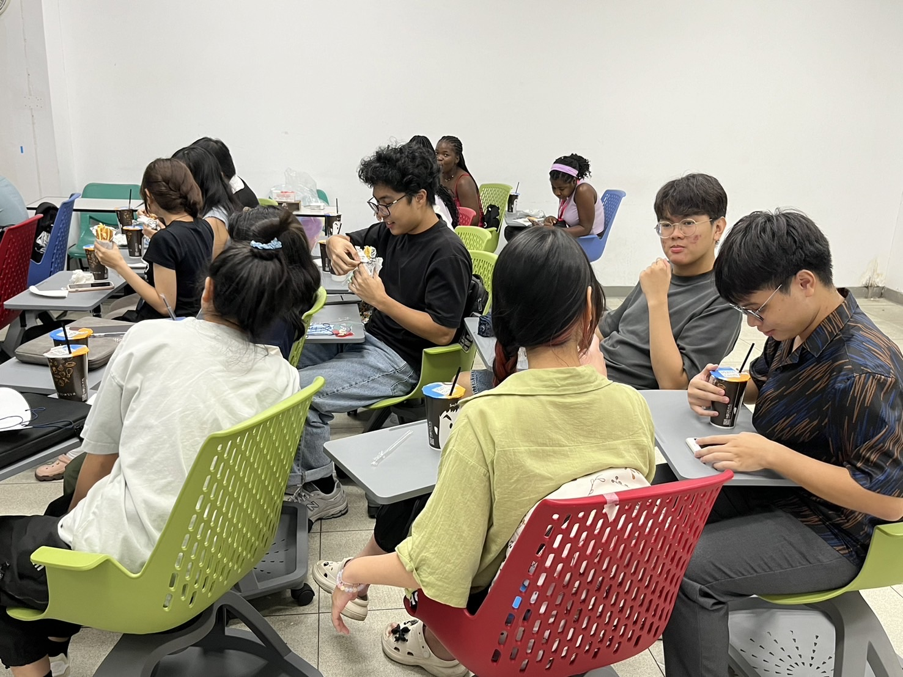
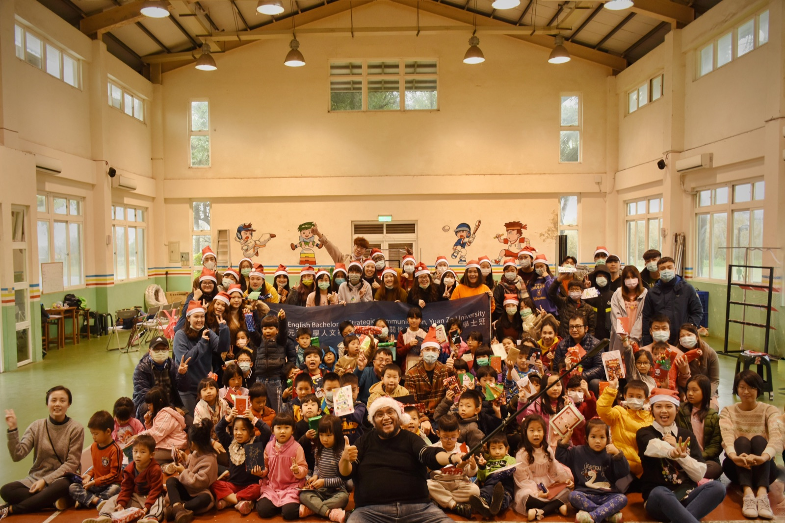
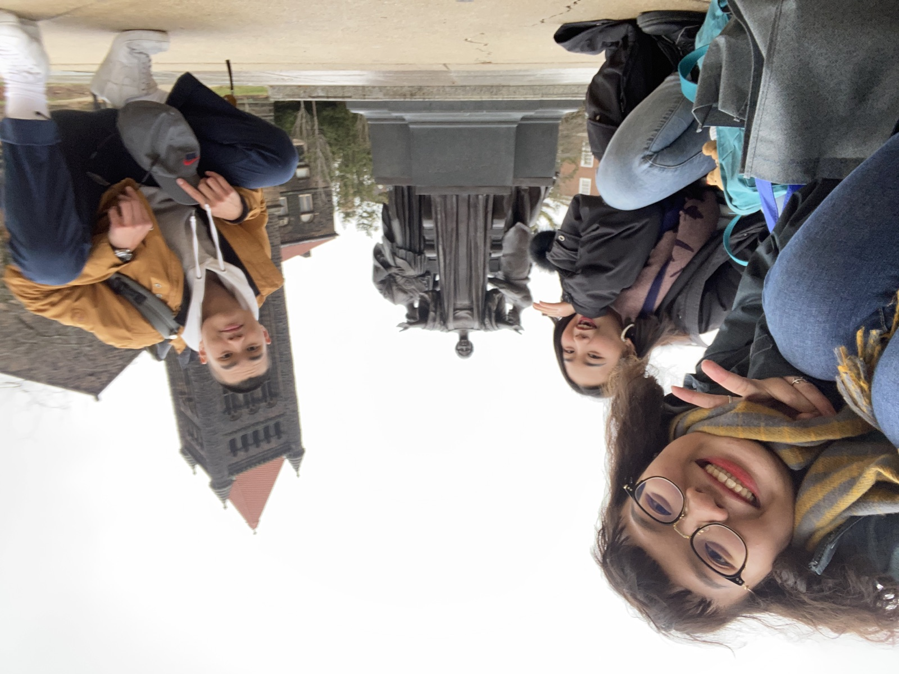
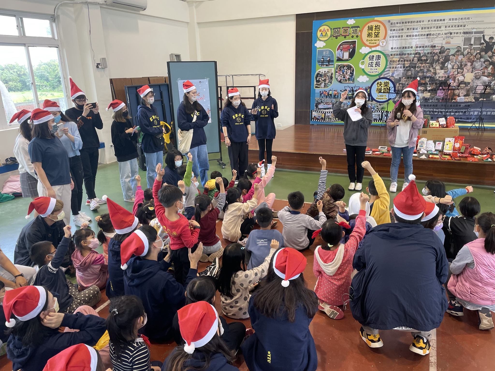

Find your people, expand your world
Campus life is part of the IBSC experience. Connect with classmates, take part in student activities and discover new perspectives through a community that crosses cultures.

Make the experience your own
The IBSC Student Association brings students together through events, workshops and networking. Beyond the classroom, service learning and international experiences offer ways to contribute, build confidence and put communication into practice.
Learning through experience
Explore the learning experiences shared by the IBSC community.
A community you help shapeMeet peers. Share ideas. Make something happen.

The Student Association brings students together through events, workshops and networking. Participation offers a way to build friendships, develop leadership and contribute your voice to campus life.
From cultural exchange to student gatherings and service, shared experiences are part of learning to communicate across cultures.
A different classroom, a wider perspectiveExplore learning beyond the familiar.

International experiences offer a different classroom and a chance to put communication into practice. Explore host institutions and courses, then discuss how an exchange could fit your academic plan.
Ask the program office about the opportunities currently available. The exchange guide below explains preparation, nomination and the steps before departure.
Communication through contributionPut learning into practice with others.

IBSC’s featured activities include visits to Bao-Sheng Elementary School, where students take part in English teaching and Christmas activities. These encounters connect communication with participation in the wider community.
Service learning also involves reflection. Review the activity process and service-log guidance before you begin, and confirm eligible activities with the university.
Make connections
Join the Student Association to meet peers, develop leadership skills and help shape campus life.
IBSC Student Association
Meet peers, develop leadership skills and help shape campus life. The Student Association brings the IBSC community together through shared experiences.
Connect, contribute and grow
The association offers opportunities to take part in events, workshops and networking. It is a place to build friendships and contribute your voice to student life.
- Connect with classmates across cultures.
- Take part in events and student activities.
- Develop leadership and collaboration through participation.
Student life in action
The program shares stories of cultural exchange, student gatherings and service. Explore these moments to see how communication continues beyond the classroom.
Find your way to take part
Look through the program’s event news and ask the IBSC office how to reach current student representatives. Bring your interests, ideas and skills to the conversation.
Learn beyond campus
Explore IBSC’s exchange resources and the university’s international opportunities.
Global opportunities
Study abroad offers a different classroom, a new cultural perspective and a chance to put communication into practice. Start by understanding how an exchange works.
What an exchange involves
University exchange programs offer short-term, non-degree study through agreements with partner institutions. Students first complete YZU’s selection process for nomination; the host university then reviews the application.
The university’s outgoing exchange guidance includes undergraduates from the second year onward. Department-managed programs can have separate selection arrangements.
Prepare your application
- Review host options and the courses available for your field.
- Prepare the exchange application, a Chinese transcript with ranking, an English transcript and language proficiency evidence.
- Follow the selection instructions and the host university’s own requirements.
- Discuss course recognition with the program before finalizing your study plan.
From nomination to departure
After host acceptance, arrange the required visa, insurance and accommodation, and complete YZU’s approval steps. Wait for official acceptance before purchasing flights. Application schedules and documents vary between hosts.
Other international experiences
IBSC also describes short-term overseas experiences and cultural exchanges. Ask the program office about opportunities currently available and how they fit your academic plan.
Contribute to your community
Find service learning information and guidance for completing activities.
Service learning
Service learning connects participation with reflection. Understand the hours, activity process and service log before you begin.
Understand the requirement
YZU describes service learning as a required one-credit undergraduate course. Before graduation, students complete 18 course hours and 18 activity hours.
- Course hours can be earned by passing departmental or general education service learning courses.
- Eligible campus activities may award course or activity hours, depending on their nature.
- Off-campus activities follow a separate approval and recognition process.
From activity to approved hours
- Find eligible activities in the university portal’s Activity Search or in university email announcements.
- Register for the activity and pre-select it under Service Learning in the portal.
- Attend the activity and sign in personally.
- Complete the service log and submit it for review.
Write and submit your reflection
IBSC’s guidance calls for submitting the log within one week after an event, excluding the event day. The log must be complete and at least 150 words. Missing a personal sign-in or submitting an incomplete or shorter log can result in rejection.
Check your portal for the approval result. If an activity or record needs clarification, contact the organizing unit or the Student Affairs Office.